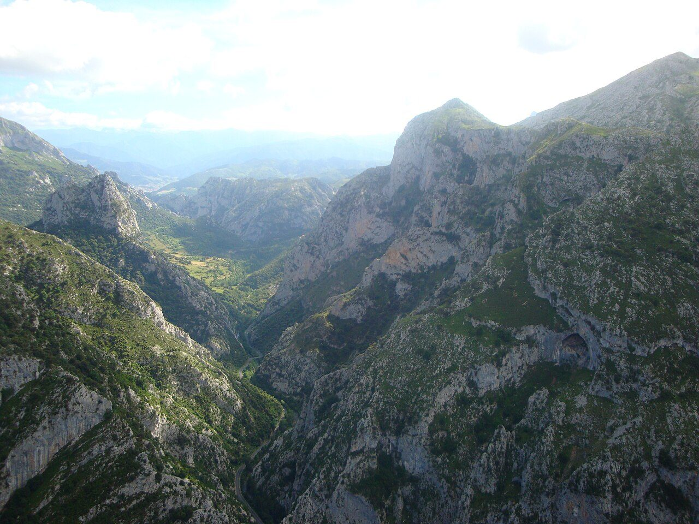
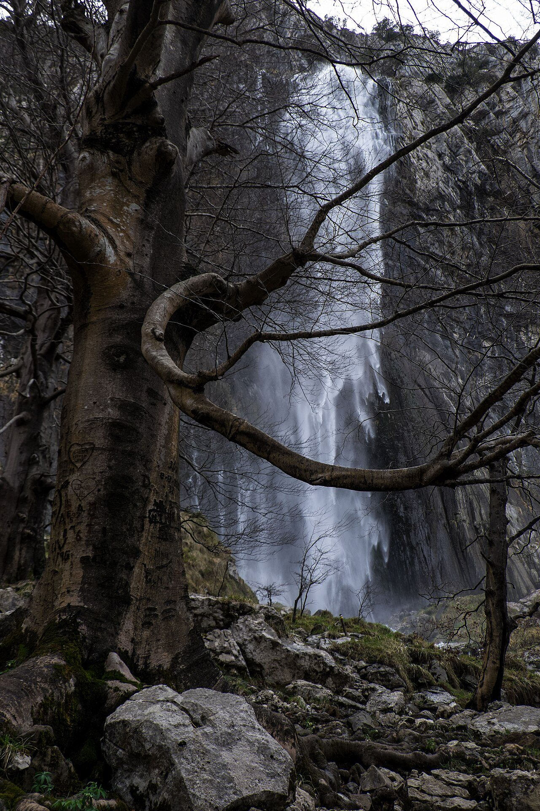
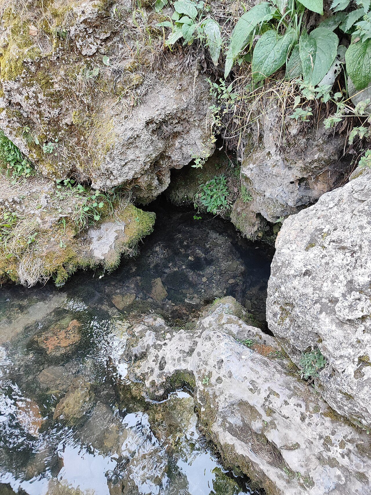

Los principales ríos: Ebro, Asón, Pas, Besaya, Saja, Nansa y Deva
Criterios: PN 1.1, PN 2.1
🤔 Pienso5 min
Qué hago aquí: Piensa un momento y contesta con lo que ya sabes. No pasa nada si no lo sabes: es para empezar.
Escribe todos los ríos de Cantabria que conozcas en un minuto. Después compara tu lista con la de tu compañero.
📖 Leo y aprendo15 min
Qué hago aquí: Lee despacio, mira los dibujos y los ejemplos, y quédate con la idea clave del final.
De oeste a este, los ríos principales de la vertiente cantábrica son:
| Río | Nace en… | Desemboca en… |
| Deva | Fuente Dé (Picos de Europa) | Ría de Tina Mayor, en el límite con Asturias |
| Nansa | Sierra de Peña Labra (Polaciones) | Ría de Tina Menor |
| Saja | Sierra del Cordel | Se une al Besaya y desembocan juntos en la ría de San Martín de la Arena (Suances) |
| Besaya | Cerca de Reinosa (Campoo) | Se une al Saja (Torrelavega) |
| Pas | Montes de Pas (Vega de Pas) | Ría de Mogro, junto a las dunas de Liencres |
| Asón | Collados del Asón (Soba) | Ría de Treto y marismas de Santoña |

Foto: Frobles · CC BY-SA 4.0 · Desfiladero de La Hermida 4.jpg

Foto: Rafa Diez · CC BY-SA 4.0 · Nacimiento del Asón. Cascada. Cantabria.jpg
El Ebro es el más largo: nace en Fontibre, cerca de Reinosa, forma el embalse del Ebro y recorre más de 900 km hasta el mar Mediterráneo, en Tarragona, donde forma un delta. Es el río más caudaloso de España.

Foto: Mentxuwiki · CC BY-SA 4.0 · Fontibre, nacimiento del Río Ebro - surgencia.jpg
✏️ Hago25 min
Qué hago aquí: Haz las actividades en orden. Empieza siempre por las básicas.
Ordena de oeste a este los seis ríos cantábricos de la tabla. Después escribe dónde nace y dónde desemboca tres de ellos.
Pon el número de orden a cada uno (1 es el primero).
Explica el error típico sobre el Saja y el Besaya: ¿dónde se juntan, por dónde llegan al mar y por qué se habla de una sola cuenca?
Compara el Ebro con un río cántabro: longitud, mar al que va, forma de la desembocadura (ría o delta) y por qué es tan distinto.
Relaciona cada río con un paisaje o lugar patrimonial que atraviesa o en el que desemboca (dunas, marismas, desfiladeros, ciudades…).
El embalse del Ebro inundó varios pueblos. Escribe dos argumentos a favor de construirlo (en su época) y dos en contra. ¿Qué patrimonio se perdió y qué se ganó?
Las ciudades e industrias de Cantabria están junto a los ríos (Torrelavega, Reinosa, Los Corrales…). Explica dos razones históricas y un problema que eso causó en los ríos.
Busca el río más cercano a tu colegio. Indica a qué cuenca y vertiente pertenece y dibuja su recorrido desde que nace hasta el mar, con tres pueblos por los que pase.
✏️ Puedes responder escribiendo, con un dibujo o un esquema, o contándolo en voz alta.
🚀 Amplío (si quieres saber más)
Qué hago aquí: ¿Has terminado? Lee la curiosidad o elige el reto. Es voluntario.
Investiga el salmón atlántico en los ríos de Cantabria: dónde nace, por qué viaja al mar y por qué vuelve al mismo río. Explica cómo afectan a su viaje las presas y los azudes y para qué sirven las escalas de peces. Termina con una propuesta para ayudarle.
✅ Compruebo5 min
Qué hago aquí: Contesta sin mirar la ficha y marca cómo lo llevas.